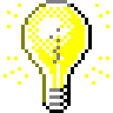

Exploring what emerging technologies can do for music creation and analysis.AI can do so much more than generate entire tracks from prompts. The field of Music Information Retrieval, embracing recent advancements in ML tech, has shown new possibilities for music analysis and education, documentation and preservation, co-creation, and interactive music experiences. As a lifelong musician, I find this new wave of findings incredibly exciting.
My current research focuses on Automatic Music Transcription (AMT), pattern recognition in music audio, and modal translation between the many representations of music.